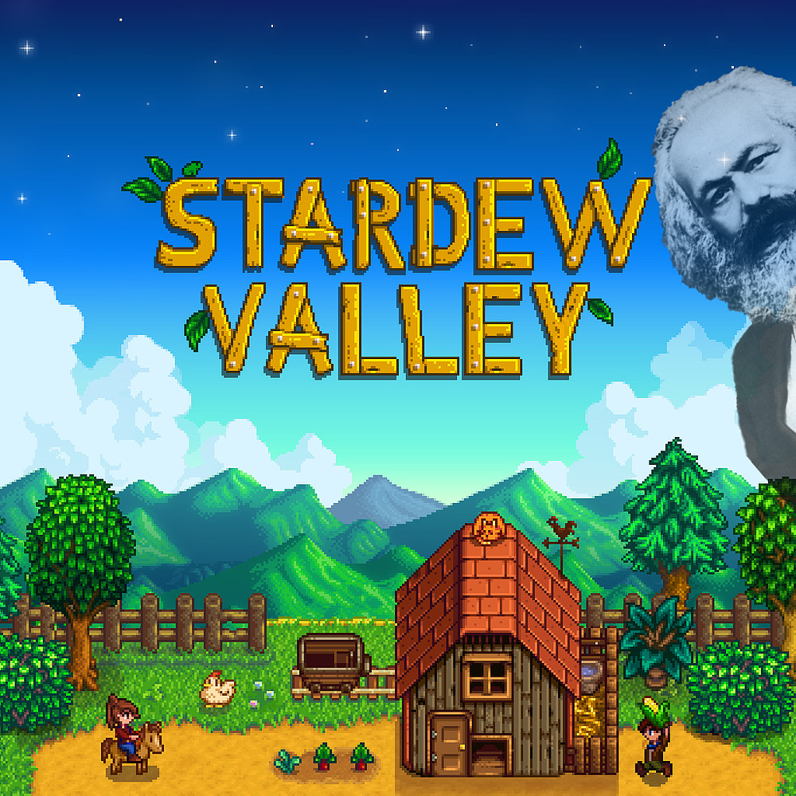

Stardew Valley is an open-ended country-life RPG! You’ve inherited your grandfather’s old farm plot in Stardew Valley. Armed with hand-me-down tools and a few coins, you set out to begin your new life. Can you learn to live off the land and turn these overgrown fields into a thriving home? It won’t be easy. Ever since Joja Corporation came to town, the old ways of life have all but disappeared. The community center, once the town’s most vibrant hub of activity, now lies in shambles. But the valley seems full of opportunity. With a little dedication, you might just be the one to restore Stardew Valley to greatness!
 Conhece Stardew Valley? Clique para saber mais!